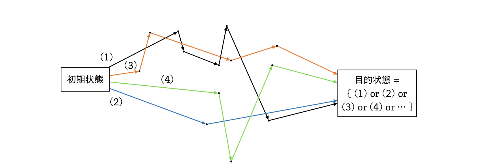
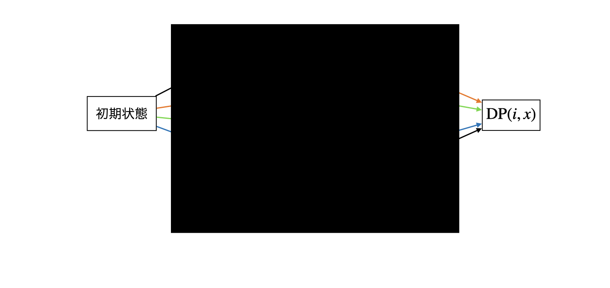
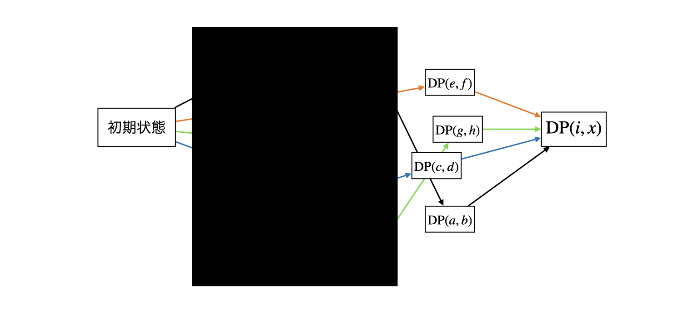

DP に関する普遍的な理解を説明することは難しいので、はじめに DP について簡潔に説明して、その後は典型問題を説明する流れで行こうと思います。
以下の抽象的な要求を考えてみましょう。

目的状態を達成する方法 (矢印の道順) を全て列挙して調べることもできますが、通常、目的状態を達成する方法の数はとてつもなく多いです。よって、上の図のように目的状態を達成する方法を全て列挙することはできません。
実際のところ、多くの問題においては個別の方法 (矢印の道順) には興味がなく、目的状態を達成する方法 (矢印の道順) ごとの「コストや価値」の集約や、方法の種類数などを調べたいことが多いため、目的状態を達成する方法 (矢印の道順) はブラックボックス化することができます。

例えば、後述するナップサック問題では状態 \((i,x)\) を \(\mathrm{DP}(i,x) := \)「\(i\) 番目までの商品でちょうど \(x\) 円使った状態」と定義し、状態までの移動方法ごとの結果を \(\mathrm{DP}(i,x) \) に集約させることで、それぞれの移動方法をまとめて \(\mathrm{DP}(i,x) \) として表現できます。
このように、個々の移動方法を一つの状態 \((i,x)\) にうまくまとめて扱うためには、状態 \((i,x)\) の集約が状態 \((i,x)\) に繋がる部分的な状態から得られることが必要です。

途中段階の状態も同様に、その状態を達成する方法の集約を持ちます。集約のデータサイズは大抵の場合大きくないので、方法全てを列挙する手法より格段に良くなりました。
これらのことから、DP においてはうまく状態を定義して、「初期状態と目的状態を上手く設計して、目的状態を達成する方法を上手く集約すること」が重要であると言えます。これを体系的に説明するのは困難だと思うので、以降は典型的な DP 問題を通して雰囲気を理解してもらおうと思います。
長さ \(N\) の数列 \(A\) からいくつかの要素を選ぶとき、選んだ要素の和が \(M\) になるように選ぶことができるかを判定してください。
状態を \((i,m)\) で表します。初期状態は \((0,0)\)、目的状態は \((N,M)\) です。また、状態 \((i,m)\) は、その状態を達成するための方法の集約として、以下で定める値 \(\mathrm{DP}(i,m) \) を持ちます。
初期状態 \((0,0)\) は何も選ばずに総和を \(0\) にできるかという問題を表すので、\(\mathrm{DP}(0,0) = True\) です。初期状態はこのように初めから定義可能なものである必要があります。若干非自明な定義であっても、DP の計算において整合性が取れれば OK です。
\(i\) 番目の要素までを使って \(x\) にできるかどうかは、\(A_i\) を「使う」/「使わない」 という 2 つの場合に帰着できます。よって、\(\mathrm{DP}(i,m)\) は前段階である、\(\mathrm{DP}(i-1,m-A_i)\) と \(\mathrm{DP}(i-1,m)\) から計算できます。
int main(){
int N,M;
cin >> N >> M ;
vector<int> A(N);
for(auto& x : A)cin >> x;
vector<vector<bool>> DP(N+1,vector<bool>(M+1,false));
DP[0][0] = true;
for(int i = 1 ; i <= N ; i++){
int a = A[i-1];
for(int m = 0 ; m <= M ; m++ ){
DP[i][m] = DP[i-1][m];
if(m-a >= 0)DP[i][m] = bool(DP[i][m] || DP[i-1][m-a]);
}
}
if(DP[N][M])cout << "Yes" << endl;
else cout << "No" << endl;
}
\(N\) 種類の商品 \(1,2,...,N\) があり、商品 \(i\) の価値は \(v_i\) ,値段は \(p_i\) 円とする。各種類最大一つしか買わないとき、\(M\) 円で買える商品の価値の総和を最大化せよ。
\(\mathrm{DP}(i,m) := \) 『\(i\) 番目までの商品で、\(m\) 円で買える商品の価値の総和の最大値』 という DP を考えると、求めたいものは \(\max_{0 \leq x \leq M}\mathrm{DP}(n,x)\) です。
\(i\) 番目の商品は「買う」/「買わない」 という 2 つの場合に分けることができ、\(m\) 円で買える商品の価値の最大値は、\(\mathrm{DP}(i-1,m)\) と \(\mathrm{DP}(i-1,m-p_i) + v_i\) の大きい方です。
上記のような数式であっても、\(\mathrm{DP}\) の指すものを一度日本語の定義に戻して考えると見通しが付きやすいです。
先述の部分和問題およびナップサック問題を改題し、\(N\) 個の要素それぞれを何度選んでも良いとした上で、空間計算量 \(O(M)\) で解いてください。
部分和問題もナップサック問題も状態遷移(集約)方法は同じのため、今回は部分和問題にフォーカスして説明します。まずは 何度選んでも良い という制約について考えます。結論から言うと、以下の \(1\) 点を変更すると達成できます。
DP[i][m] = bool(DP[i][m] || DP[i-1][m-a] || DP[i][m-a]); にする。
\(m\) が小さい順にイテレーションを行っていることで、DP[i][m-a] が計算済みであることを利用しています。DP[i][m-a] を達成するための遷移において \(i\) 個目の要素を使用した場合、DP[i][m-a] から DP[i][m] への遷移では \(i\) 個目の要素が \(2\) 度以上使用されているとわかります。DP[i][m] についても同様に DP[i] の計算で使用されるため、この遷移には \(i\) 番目が使用される回数の制限がないことがわかります。
次に、空間計算量を \(O(M)\) にすることについて考えます。これはインライン DP を行うことで解くことができます。と言うか、実は各要素を何度選んでも良いと言う部分もインライン DP にするだけで解けます。
先述の DP テーブル計算の \(i\) 番目のイテレーションにおいては、\(i-2\) 番目以前のテーブルと \(i+1\) 番目以降のテーブルは無駄な領域になっています。そこで、DP テーブルをインライン化することで一つ目の添字 \(i\) を省略することにします。すなわち、DP テーブルは長さ \(M+1\) の一次元配列になります。
\(i\) を昇順に見ていく中で、この DP テーブルを使い回していきます。特に、これから使用するデータを上書きしてはいけないため、\(m\) に関するイテレーションの順序が大事になります。今回は、\(m\) を昇順に見ていくことで、結果的に各要素を何度選んでも良いという追加条件を満たしながら DP テーブルを埋めていくことができます。
int main(){
int N,M;
cin >> N >> M ;
vector<int> A(N);
for(auto& x : A)cin >> x;
vector<bool> DP(M+1,false);
DP[0] = true;
for(auto a : A){
for(int m = 0 ; m <= M ; m++ ){
if(m-a >= 0)DP[m] = bool(DP[m] || DP[m-a]);
}
}
if(DP[M])cout << "Yes" << endl;
else cout << "No" << endl;
}
また、各要素を何度選んでも良いという条件をなくすと、\(m\) を見る順番が変わります。この場合に \(m\) を昇順に見て計算を行うのは、先述の「これから使用するデータを上書きする」ことに該当します。今回の場合は、\(m\) の見る順番を降順にすることで上手く DP テーブルを計算することができます。
長さ \(N\) の数列 \(A\) があります。\(A\) の部分列のうち、狭義単調増加で最長のもの (LIS) の長さを求めてください。
\(\mathrm{DP}(i,l) := \) 『数列 \(A\) の前から \(i\) 個目までで長さ \(l\) の狭義単調増加列を作る時、その右端の要素としてありえる最小値』とし、\(\mathrm{DP}(0,0) = -∞ , \mathrm{DP}(0,l) = ∞ (l \geq 1)\) で初期化します。
各 \(i\) について、数列 \( b_x := \mathrm{DP}(i,x)\) が狭義単調増加になることに注意してください。
\(i-1\) 番目までで構築した LIS の結果を見て、数列 \(A\) の \(i\) 番目の要素を調べます。
なお、広義単調増加部分列を求める場合は、上記の \(m\) の条件を \( A_i < \mathrm{DP}(i-1 , m)\) である最小の \(m\) とし、upper_bound を用いることで同様の dp でも求めることができます。( この時、\(\mathrm{DP}(i)\)は広義単調増加になる )
上記の DP では \(O(N^2)\) サイズの DP テーブルで DP を行いましたが、\(i \rightarrow i+1\) の遷移では DP テーブルの一箇所しか更新しないので、インライン DP によって計算量を削減できます。
int main(){
int N;
cin >> N;
vector<long long> A(N);
for(auto& x : A)cin >> x;
vector<long long> DP;
for(auto x : A){
auto itr = lower_bound(DP.begin(), DP.end(), x);
if(itr!=DP.end())*itr = x;
else DP.push_back(x);
}
cout << DP.size() << endl;
}
文字列 \(S\) と \(T\) が与えられます。\(S\) に対して、以下の \(3\) 種類の操作を定義します。
以上の操作で \(S\) を \(T\) に一致させるために必要な操作回数の最長値を求めてください。
以下の DP テーブルを構築します。
遷移は以下の通りです。DP の定義をよく読めば納得感があると思います。
(C++ では int(true) は \(1\) になります。上記の式もこれに従います。)
文字列 \(S\) と \(T\) が与えられます。 \(S\) と \(T\) の共通する部分列のうち、最長のものの長さを求めてください。
編集距離と似たような感じです。以下の DP テーブルを構築します。
遷移は以下の通りです。DP の定義をよく読めば納得感があると思います。
(C++ では int(true) は \(1\) になります。上記の式もこれに従います。)
\(N\) 以下の自然数のうち、桁和が \(D\) の倍数である自然数の答えを \(\mod{1000000007}\) で求めよ。ただし、\(N\leq 10^{100000}, D \leq 100\) である。
(出典 : AtCoder TDPC-E(https://atcoder.jp/contests/tdpc/tasks/tdpc_number))
TODO です。個人的には配る DP が書きやすいです。
int main(){
using mint = mint1e9_7;
ll D;
string N;
cin >> D >> N;
ll n = N.size();
// dp[i][0][x] := N の上から i 桁目までを 10 進数として見たとき、それ未満の整数のうち桁和 D で割ったあまりが x である整数の個数
// dp[i][1][x] := N の上から i 桁目までを 10 進数として捉え、その桁和を D で割ったあまりが x である整数の個数(これは、高々 1 通り)
vector dp(n+1,vector(2,vector<mint>(D,0)));
// N の 0 桁目までは 0 であることを考慮すると、
dp[0][0][0] = 0;// 0 以下は存在しない
dp[0][1][0] = 1;// 0 自身のみ
// 配る DP の方が書きやすい
for(int i = 0 ; i < n ; i++){
int digit = int(N[i]-'0');
// 桁和が x のもの
for(int x = 0 ; x < D ; x++){
// dp[i][F][x] の F の状態の変化に注目する
// F が 0 → 0 は, 0 ≦ p ≦ 9 のどの p も i+1 桁目として採用して OK : ( 桁和が x → x+p に変化する)
for(int p = 0 ; p < 10 ; p++)dp[i+1][0][(x+p)%D] += dp[i][0][x];
// F が 0 → 0 は, digit 未満の p なら i+1 桁目として採用して OK : ( 桁和が x → x+p に変化する)
for(int p = 0 ; p < digit ; p++)dp[i+1][0][(x+p)%D] += dp[i][1][x];
// F が 0 → 1 はありえない
// F が 1 → 1 は digit を i+1 桁目に採用する場合の 1 通りのみ
dp[i+1][1][(x+digit)%D] += dp[i][1][x];
}
}
// 0 のぶんを答えからひく
cout << dp[n][0][0] + dp[n][1][0] - 1 << endl;
a から z までの \(26\) 文字を使って長さ \(K\) の文字列を作ります。ただし、辞書順で \(i\) 番目のアルファベット文字は最大で \(c_i\) 個までしか使ってはいけません。作ることができる文字列が何種類あるかを \(\mathrm{mod}\space 998244353\) で答えてください。
(出典 : ABC 358-E(https://atcoder.jp/contests/abc358/tasks/abc358_e))
以下の DP テーブルを定義します。
\(p\) について以上を足し合わせることで \(i\) が小さい方からテーブルを埋めることができます。